0JJ7-005
If you are using Windows Vista/7/8/Server 2008/Server 2012, you can print by using the WSD (Web Services on Devices) protocol. If you want to use WSD, first install the printer driver and then add a network printer.
1
Log on to the computer with an administrator account.
2
Open the printer folder. Displaying the Printer Folder
3
Click [Add a printer] or [Add Printer].
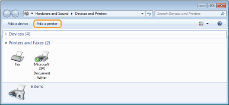
4
Click [Add a local printer].
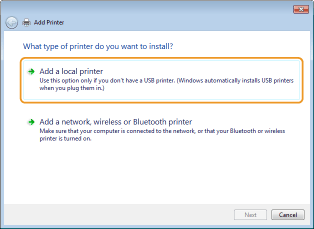
5
Check that [LPT1] is selected under [Use an existing port], and click [Next].
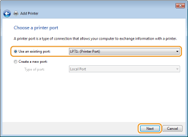
6
Click [Have Disk].
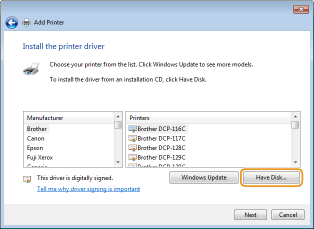
7
Click [Browse].
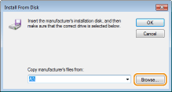
8
Specify the folder where the printer driver is stored, select the Inf file, and click [Open].
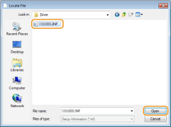
Specify the folder where the printer driver is stored as follows.
32-bit operating system
Specify [UFRII] [us_eng] [32BIT] [Driver] folders of the CD-ROM/DVD-ROM or downloaded file.
[us_eng] [32BIT] [Driver] folders of the CD-ROM/DVD-ROM or downloaded file.
Specify [UFRII]
64-bit operating system
Specify [UFRII] [us_eng] [x64] [Driver] folders of the CD-ROM/DVD-ROM or downloaded file.
Specify [UFRII]

If you do not know whether to specify the 32-bit version or the 64-bit version Checking the Bit Architecture
9
Click [OK].
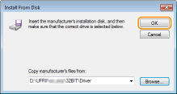
10
Select your printer, and click [Next].
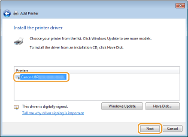
11
Change the printer name as necessary, and click [Next].
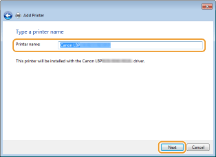
 |
The installation starts.
|
12
Select [Do not share this printer], and click [Next].
If you want to share the printer, make sharing settings for the printer added with Adding a Network Printer. (Configuring Settings on the Print Server Computer)
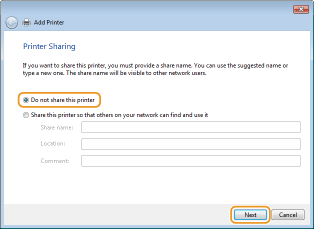
13
Click [Finish].
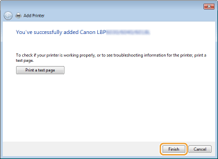
|
|
An icon for the installed printer is displayed in the printer folder.
 |
1
Open the network folder.
Windows Vista/Server 2008
[Start] select [Network].
[Start]
Windows 7/Server 2008 R2
[Start] [Computer] select [Network].
[Start]
Windows 8/Server 2012
Right-click the lower-left corner of the screen [File Explorer] select [Network].
Right-click the lower-left corner of the screen
2
Right-click the newly added printer icon, and click [Install].
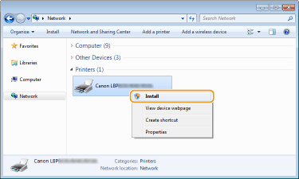
|
|
Installation for using WSD is complete when an icon for the printer is added to the printer folder.
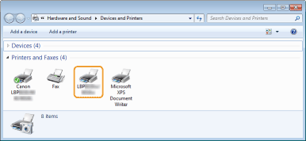
|
 |
|
Deleting Unneeded Printer Icons
When you have finished installing the network printer, the icon added in step 13 of Installing a Printer Driver is no longer needed. To delete the icon, right-click it and select [Remove device] or [Delete]
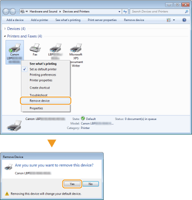
|